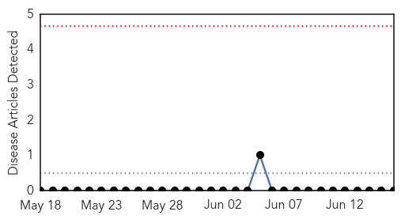

Bubonic Plague
30-Day Web Trend
0 alerts, 0 warnings

30-Day Twitter Trend
0 alerts, 0 warnings

Article Locations

Article Confidences

Top Articles:
-
No articles found for Jun 16, 2015
Top Tweets:
-
No tweets found for Jun 16, 2015
Cholera
30-Day Web Trend
5 alerts, 0 warnings

30-Day Twitter Trend
0 alerts, 0 warnings

Article Locations

Article Confidences
Top Articles:
- 0.962
- Looming cholera upsurge in Accra - Appiah-Denkyira
- 0.948
- EU gives €600,000 to prevent cholera outbreaks in Ghana
- 0.946
- Ghana moves to curb cholera outbreak after floods
- 0.887
- Ghana Health Service warns of upsurge of cholera cases in Accra
- 0.867
- Kenya : Kenya: Anxiety in Naivasha as cholera cases hit 16
- 0.820
- Florida health officials warn of deadly bacteria
- 0.664
- International experts join Cholera victims’ fight for justice
- 0.643
- Iraq’s Unending Woes
- 0.622
- Breaking News & Views for the Progressive Community
- 0.544
- EU Supports Ghana With 600 000 euro to prevent cholera -
Top Tweets:
-
No tweets found for Jun 16, 2015